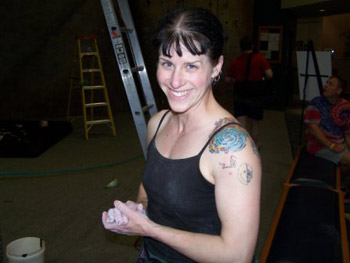

|
e-Grips Routesetting Interview: Molly Beard 
eG: When did you start routesetting? How many, and which gyms, have you set at commercially? MB: I started setting around ’95, mostly just tooling around the gym where I was coaching. It was very fun, as most setters can attest. I was also starting to compete and that really perked my interest as I quickly noticed when the setting was good and when it wasn’t. Most of my commercial setting time has been spent here in Portland; primarily at Stoneworks and ClubSport. With comps I’ve set at more gyms that I have digits on my paws. Right now I’m doing the freelance bit, when I’m not dry-walling and painting our house. eG: So, Molly, you’ve been a part of the USAC National Setting family for years now, what’s it like to be the reigning queen of routesetting in US competitions? MB: Ha. I like queen better than Grand Dame, that’s a fact! The folks I’ve gotten to work with and know over the years are AMAZING. No lie. I think it would be impossible to do the things we do: to critique each other, to be brutally honest with each other and still really like each other if we weren’t all good people at the start. Family is a good way to call it. On a serious note, I don’t know why there have been so few women involved. Up until last year I hadn’t worked with a single lady at any event. On the one hand, I don’t care about being the only female; hell, my best friends are guys, why does where the toilet seat goes matter? Yet it’s more than a little weird because I know there are good lady setters out there! eG: Yourself, eG Team Setter Kynan Waggoner, and kid climbing phenom Kevin Branford all call Tony Yaniro a routesetting mentor – tell us what you’ve learned from the legend of American Routesetting? MB: Unyielding desire to always do better. There is always something new to learn as long as you look carefully at what you have done. eG: We met at your longtime gym Clubsport, in Portland, OR at an ABS Regional that yourself, I, and Mike Moelter set. Initially, we all had some friendly friction about the style of problems back then, as I recall. What do you think were the differences in approach, then, and if any, now? MB: You still remember that? Jeez, I have problems finding my shoes some mornings! I don’t remember much about the style of problems, so much as the location you two were proposing for the finals. I think the biggest difference was one of experience. I was coming from the place of ‘independent’ routes, of how most onsights had been run, where each route or problem had its own space well separated from the others. You and Moelter were trying to create more of ‘the show’, where all the routes were much closer together. I was glad (still am) that we ran the finals in the Moelter-Danielson vision; it was way more exciting than what I had planned. I think any differences now have more to do with what kind of space each gym offers and how to try and create as much action as possible in that space for any given spectator. eG: Do you prefer one “style” to another, whether in bouldering or routes? What would you say is your personal setting style, if any? MB: I don’t know that I have much of a specific style anymore. I have worked hard to try and not get boxed into a ‘style’. After doing so much commercial setting I feel good at setting one route that challenged folks of very different heights fairly. I think if anything I would identify my setting as brutally pumpy and requiring much body-tension. eG: You recently withdrew (or is it a sabbatical?) from commercial routesetting. Do you miss it? What were the biggest challenges of commercial setting? What do you not miss? MB: There are days when I miss the commercial stuff quite a bit. The members at the gym are really great, I miss giving them the ‘little presents’, and I miss receiving the feedback; good or bad, it added up to a huge amount of learning. Then there are days when I am elbow deep in the garden psyched I’m not hanging in a harness! eG: As a competition setter, you are as experienced as anyone else in the US. Don’t be modest… what makes you so good at it? What makes a great comp setter? MB: A mouth as coarse as your teenage brother’s. Just kidding. I don’t know that there is anything really special about what I do. I watch the competitors carefully thru the year, I am a big believer in the ‘team’ concept (listening carefully to what my setting teammates have to say about my routes), and I pay very close attention to how hard each move feels. I’m a bit OCD for observation, both objective and subjective. It can all be summed up as attention to detail; that is what makes the cut from a good setter to a great one. eG: What are your favorite eG sets? Or types of holds in general?
MB: Mini Myorcian Tuffas. I would use those every time, on every route and problem if I had the chance. Ooooh! And the Bubble Wrap. I drool just thinking about that sucker. I also am a huge fan of the original VooDoo Talus series, Stoneage’s Pandora, and some very vintage slopers that Tony Yaniro shaped for Metolius...where have those molds gotten to????? eG: You instructed a USAC Routesetting Clinic this summer with folks from the Southwest all the way to Alaska – how do you “teach” routesetting? What suggestions would you have for people looking to improve? MB: Other than basic mechanics, which must be shown, more advanced routesetting is so much about observation, objective and subjective again! There are the little tricks like teaching folks how to gauge sizing for small climbers, adding appropriate footholds, how to force sequences, etc. Yet I find the majority of teaching routesetting has to do with teaching folks how to give and take critique in a useful manner. You can teach someone a way to force a rose-cross, but when it comes to future application it might not work. How is a newer setter to learn nuance if they can’t handle the critique? How does a newer setter give that critique and be heard? Really good setting evolves from practice, observation, AND communication. eG: Lastly, there must be some crazy setting stories from your past… will you give us a nugget? Scariest? Most surprising? Most fun? MB: Hmmm…Scariest- that would have to be the time at a National when we had our room reservation messed up and there were 6 really stinky setters sharing one room. Another story isn’t really scary, and would take way too long to relate…but here’s the bones: 2004 Continental Championships in Mexico City. Adult and Youth categories in difficulty, speed and bouldering. We had nine days to set everything with approximately 400 holds (fully half of them monster jugs), a wall that could hold 5 routes, a boulder that was under construction, and no outdoor lighting. Yet the locals were rad, the international judge was super supportive, the food was yummers, and in the end we got the job done. It was an incredible time. It really made me see what could be done with almost nothing. eG: Thanks Molly! |